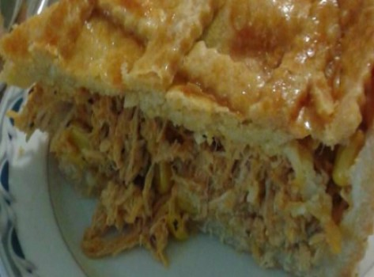
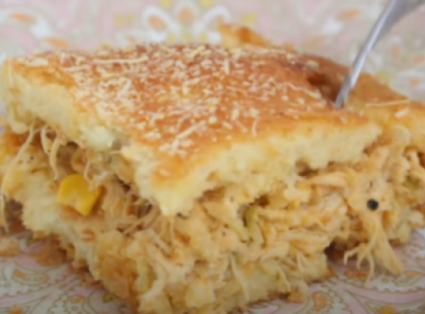
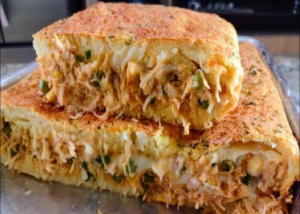
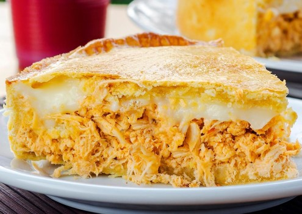
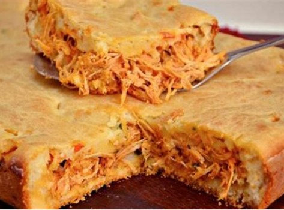
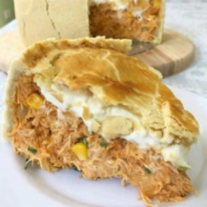
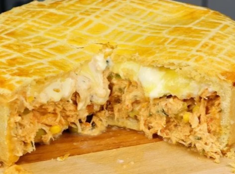
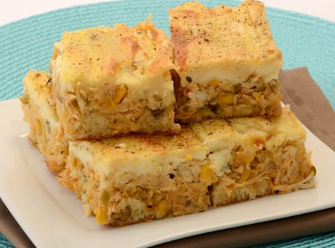

Torta de frango
INGREDIENTES
RECHEIO
- 2 peitos de frangos cozidos
- 4 colheres de (sopa) de azeite
- 1 colher de (sopa) de manteiga
- 3 dentes de alho triturados
- 3 colheres [de chá] de paprica picante(a gosto)
- 2 colheres [de chá] de sal (a gosto)
- 2 colheres [de chá] de paprica defumada
- 1 colher[de chá] de lemon péper
- 600gm de requeijão cremoso
- 200ml de extrato de tomate
- 2 caixinhas de milho verde
Ingredientes
MASSA
- 3 Xicaras de farinha de trigo
- 1 Xicara de leite morno
- ½ Xicara de azeite de oliva
- 2 Ovos
- 1 Pitada de sal
- 1 Colher de sopa de fermento em pó
- 1 Xicara de água
- ½ Xicara de leite
- 3 colheres de sopa de queijo parmesão ralado
- 1 Colher de sopa de farinha de trigo
- 1 Colher de sopa de margarina
MODO DE PREPARO
MASSA
- Misture todos os ingredientes em um recipiente
- E deixe descansar por 15 minutos
- Logo a pós pegue ¼ da massa e abra para a tampa e deixe descansar por 5 minutos
- E em seguida abra a maior parte e deixe descansar por mais 5 minutos
RECHEIO
- Em primeiro lugar desfie o peito de frango
- Em seguida em uma panela {já pré-aquecida} adicione o azeite e a manteiga
- Logo após coloque o alho e refolgue até dourar
- E adicione o frango desfiado resfolgando-o junto aos temperos
- Coloque ½ do milho disponivel
- E logo após adicione o extrato de tomate com mais 100ml de água
- E espere cozinhar até reduzir o molho
- Em seguida desligue o fogo e adicione o restante do milho e do requeijão e reserve
MONTAGEM
- Em um recipiente de sua preferência pegue a maior parte da massa e cubra o fundo
- Logo após preencha com o recheio por completo
- E em seguida cubra com o restante da massa juntando as potas e se sertificando que não havera nenhuma abertura
- E leve ao forno pré aquecido a 180° por 30 minutos
COMO NÃO FAZER








{kind=link}
{kind=link}
{kind=link}
{kind=link}
{kind=link}
{kind=link}
{kind=link}
{kind=link}
{kind=link}